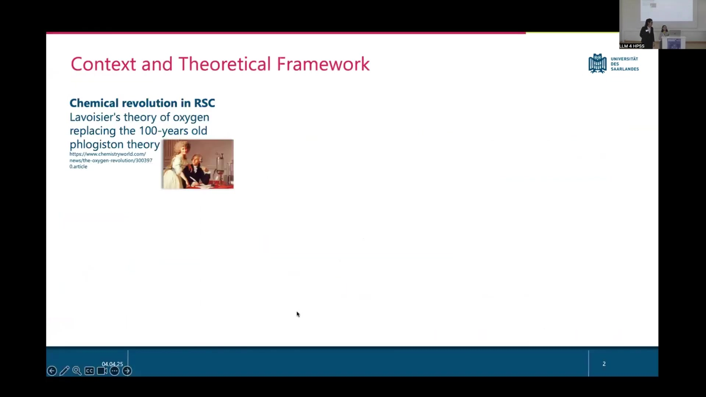
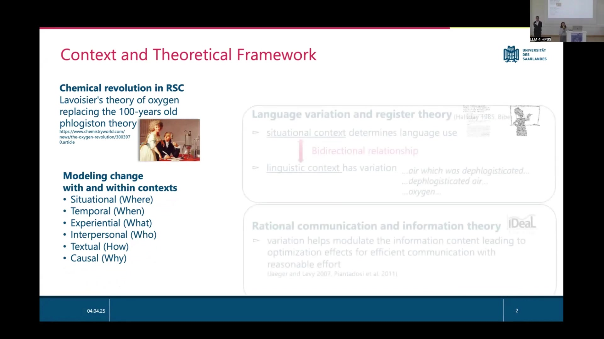
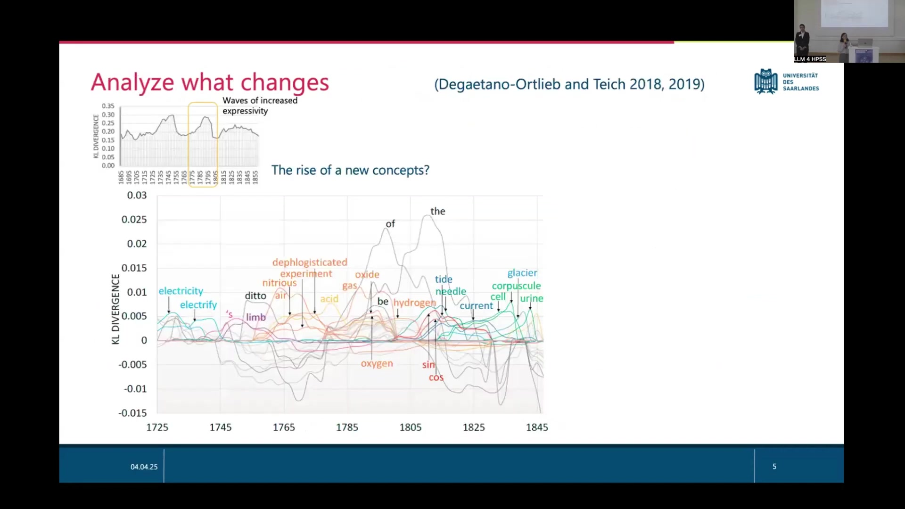
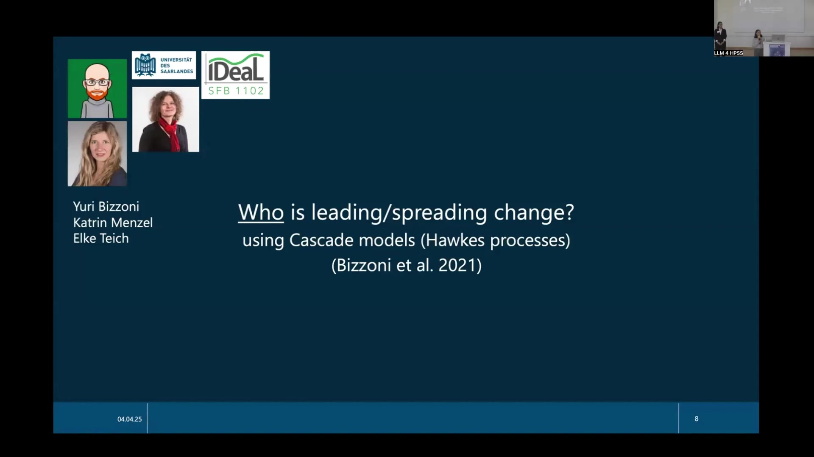
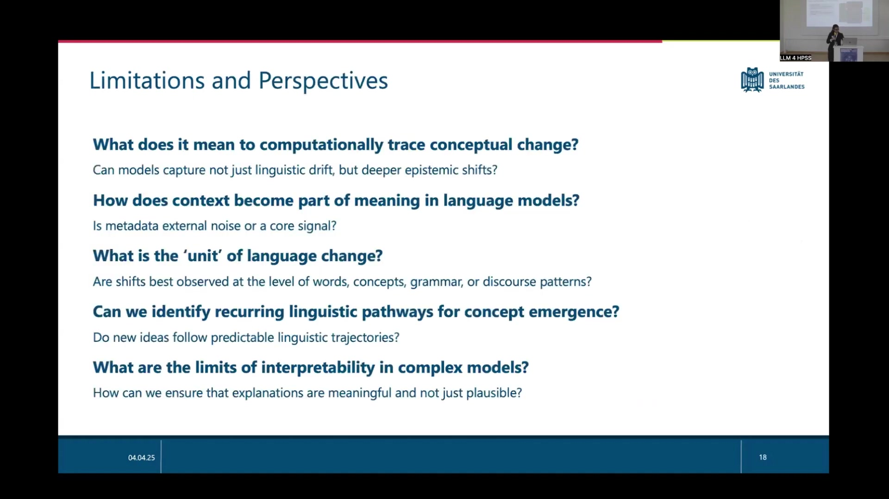
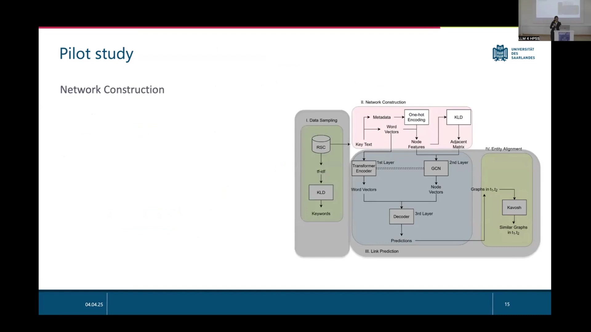

17 Interpretable Models for Linguistic Change
17.1 Overview
The presentation details a research project focused on modeling context and the interplay between different types of context to trace linguistic change, specifically in English scientific writing. The project utilizes methods from both traditional linguistic analysis and deep learning. The core objective is to develop interpretable models that bridge these approaches to understand how language changes over time and across different contextual dimensions. The research investigates the chemical revolution period (1760s-1820s) in the Royal Society Corpus (RSC) as a case study, focusing on the shift from the phlogiston theory to the oxygen theory.
Previous work involved modeling context using separate approaches. The current work aims to combine these approaches and analyze their interactions. The theoretical framework draws upon language variation and register theory (Halliday 1985, Biber 1988), which posits that situational context determines language use and linguistic context exhibits variation. It also incorporates principles from rational communication and information theory (Jaeger and Levy 2007, Piantadosi et al. 2011), suggesting that linguistic variation modulates information content for efficient communication.
Methods for detecting periods of change include continuous comparison using Kullback-Leibler Divergence (KLD) on probability distributions of linguistic units (words, POS trigrams) over time (Degaetano-Ortlieb and Teich 2018, 2019). This method identifies periods of increased divergence, indicating significant linguistic shifts. Analysis of what changes involves examining the specific lexical items and grammatical patterns contributing to high KLD, revealing “waves of increased expressivity” potentially linked to new concepts. The effects of change are observed across linguistic levels, including lexical items (lemmas) and grammatical units (POS trigrams).
Paradigmatic context and change are analyzed using semantic space models (Fankhauser et al. 2017, Bizzoni et al. 2019), visualizing semantic similarity and frequency of terms like “phlogiston” and “oxygen” across different time periods. Identifying who leads or spreads change utilizes Cascade models (Hawkes processes) (Bizzoni et al. 2021), which model influence spread within a network, identifying innovators (e.g., Priestley) and spreaders (e.g., Pearson).
Investigating how change is realized linguistically and why it occurs from a communicative perspective involves analyzing Surprisal (Shannon 1949), which correlates with cognitive effort (Hale 2001, Levy 2008, Crocker et al. 2016). Linguistic structures that reduce surprisal and encoding effort, such as shifts from prepositional phrases (“consumption of oxygen”) to compounds (“oxygen consumption”), are analyzed over time in relation to community adoption (number of authors).
The proposed framework for modeling context for language variation and change addresses limitations of current methods (e.g., static network approaches) by treating context as a central signal. It proposes using Graph Convolutional Networks (GCNs) for modeling complex relational data. A pilot study on the chemical revolution outlines a multi-stage process:
Data Sampling: Using the RSC, applying tf-idf and KLD to identify keywords in the target period (1760s-1820s).
Network Construction: Building time-aware networks. This involves creating word- and time-aware feature vectors using BERT for word embeddings and one-hot encoding for categorical metadata (author, journal, period). Node feature matrices are created for 20-year periods. Change in node features is measured using KLD across periods, resulting in a diachronic series of graphs. Network size is managed using community detection algorithms (e.g., Riolo & Newman 2020).
Link Prediction: Predicting how, when, and by whom words are used. Word profiles are augmented with semantic embeddings (from BERT), contextual metadata (author, journal, period), and grammatical information (POS, syntactic role). A Transformer-GCN model learns patterns in these profiles to predict new links, with GCN capturing structural relationships and Transformer attention highlighting influential contextual features.
Entity Alignment: Inspecting and interpreting change. This involves identifying Network Motifs (small, overrepresented subgraphs) using the Kavosh algorithm, which groups isomorphic graphs to find motifs across networks. Entity alignment (e.g., using GCNs for tasks like aligning concepts across different datasets or languages) is a future perspective.
Limitations and perspectives include computationally tracing conceptual versus linguistic change, integrating metadata as a core signal, determining the optimal unit of language change (word, concept, grammar, discourse), identifying recurring linguistic pathways for concept emergence, and ensuring interpretability of complex models. Future work includes expanding to multilingual corpora (e.g., French, German journals) and other text types (letters, monographs) and investigating the expression of attitude (positive/negative) towards concepts within the network structure.
17.2 Context and Theoretical Framework

The research focuses on the computational analysis of semantic change across different environments, specifically modeling context and the interplay between various types of context. A key case study involves the chemical revolution as documented in the Royal Society Corpus (RSC). This historical event centers on the replacement of the 100-year-old phlogiston theory by Lavoisier’s theory of oxygen. Previous research efforts modeled context using separate approaches, while the current work aims to combine these methods to analyze the interactions between different contextual dimensions.
The framework identifies six key types of context: Situational (Where), Temporal (When), Experiential (What), Interpersonal (Who), Textual (How), and Causal (Why). The theoretical foundation draws upon two main areas. Firstly, language variation and register theory, as described by Halliday (1985) and Biber (1988), posits that situational context dictates language use and that linguistic context inherently exhibits variation. Examples of such variation include phrases like “…air which was dephlogisticated…”, “…dephlogisticated air…”, and “…oxygen…”. Secondly, rational communication and information theory, developed within the IDeaL SFB 1102 project and referenced in works by Jaeger and Levy (2007) and Piantadosi et al. (2011), suggests that linguistic variation serves to modulate information content, leading to optimization effects that facilitate efficient communication with reasonable effort.
17.3 Detecting Linguistic Change

The research addresses the problem of detecting periods of change in language use by identifying these periods directly rather than relying on comparisons between predefined time segments. The primary method for detecting change utilizes Kullback-Leibler Divergence (KLD). This approach compares the probability distributions, p(unit|context), of linguistic units over time using a continuous comparison method (Degaetano-Ortlieb and Teich 2018, 2019). The interpretation of KLD values is direct: similar distributions result in low divergence, while differing distributions yield higher divergence. The continuous comparison employs a sliding time window, for instance, comparing a 20-year period designated as “PAST” with the subsequent 20-year period labeled “FUTURE”.
To analyze what changes, the method plots KLD over time for various linguistic items, including both lexical items and POS trigrams. Peaks observed in these KLD plots are interpreted as “waves of increased expressivity,” suggesting the emergence of new concepts or significant shifts in the linguistic treatment of existing ones. The analysis includes a wide range of lexical items such as “electricity”, “electrify”, “’s”, “limb”, “ditto”, “air”, “dephlogisticated experiment”, “nitrous”, “acid”, “gas”, “oxide”, “be”, “hydrogen”, “current”, “urine”, “cell”, “corpuscule”, “glacier”, “tide”, “the”, “of”, “sin”, and “cos”. A specific period of interest, approximately from 1765 to 1805, is highlighted, encompassing terms like “dephlogisticated experiment”, “nitrous”, “acid”, “air”, “gas”, “oxide”, “be”, “hydrogen”, “current”, “urine”, and “cell”. This period aligns with significant historical events like the discovery of hydrogen (inflammable air) by Henry Cavendish in 1766 and the discovery of oxygen (dephlogisticated air) by Joseph Priestley in 1774.
The analysis observes effects across different linguistic levels. KLD is applied to lexical items, using the lemma as the unit of analysis, and also to grammatical units, specifically POS trigrams. The findings indicate that peaks in KLD for lexical items, occurring around 1775-1805, correspond roughly to peaks observed in the KLD analysis of POS trigrams. Examples of POS trigrams analyzed include “NN NN IN (zenith distance of)”, “VBZ JJR IN (is greater than)”, “DT NN IN (the end of)”, “NN NN NN (thunder and lightning)”, “IN JJ NN (of dephlogisticated air)”, “DT NNS IN (the effects of)”, “NN NN DT (oxide of iron)”, “NN NN IN (the quantity/number of)”, “VBZ JJR IN (is greater than)”, “NN NN IN (unite edge of)”, and “IN DT JJ (for the same)”. This suggests that linguistic change during this period manifested across both vocabulary and grammatical structure.
17.4 Paradigmatic Context and Influence

The analysis of paradigmatic context and change employs methods described by Fankhauser et al. (2017) and Bizzoni et al. (2019). This technique involves visualizing semantic space at different time periods, such as 1780, 1800, and 1840. Terms are represented as points within this space, where their position indicates semantic similarity. The visualizations provide additional details: the size of the circle representing a term indicates its relative frequency, and color is used to represent clusters of terms. Observing the shifts in term positions and clustering over time reveals semantic change, exemplified by the appearance of “oxygen” and the changing position and frequency of terms like “phlogiston” and “dephlogisticated”. The corpora used for this analysis are available at corpora.ids-mannheim.de.
To identify who is leading or spreading change, the research utilizes Cascade models, specifically Hawkes processes, as detailed by Bizzoni et al. (2021). These models are applied to model the spread of influence or linguistic innovations within a network, such as a network of authors. The models enable the identification of individuals acting as “Innovators,” such as Priestley, and those acting as “Early Adopters” or “Spreaders,” including Pearson and Davy. The results are visualized using a heatmap that shows author influence over time. In this visualization, the color intensity represents the degree of influence, and dashed lines are used to indicate the spread of influence across different time points.
17.5 Linguistic Realization and Communicative Perspective

The research investigates how linguistic change is realized and why these changes occur from a communicative perspective. The approach involves analyzing change within the linguistic context using the concept of Surprisal, as introduced by Shannon (1949). The underlying principle is that the surprisal of a linguistic unit is proportional to the cognitive effort required to process it, a relationship supported by work from Hale (2001), Levy (2008), and Crocker et al. (2016). A core hypothesis is that linguistic changes occur to reduce cognitive effort and facilitate more efficient communication.
The analysis tracks the surprisal of different linguistic structures over time. Examples of structures examined include clausal forms like “…the oxygen (which was) consumed”, prepositional phrases such as “…the consumption of oxygen…”, and compound forms like “…the oxygen consumption…”. The observation is that the surprisal of longer, more effortful structures, exemplified by the prepositional phrase “Prepositional consumption of oxygen”, tends to decrease over time. This decrease coincides with the emergence and establishment of shorter, less effortful structures, such as the compound “Compound oxygen consumption”, within the linguistic community. A correlation is observed between the decrease in surprisal for these shorter forms and an increasing number of authors adopting and using them. This process indicates that shorter encoding emerges and becomes established in the community, effectively reducing cognitive effort as reflected by lower surprisal values. This work is related to the MA thesis of Viktoria Lima-Vaz (2025) and a submission by Degaetano-Ortlieb et al. (July 2024).
17.6 Framework for Context and Language Dynamics

The proposed framework for modeling context for the analysis of language variation and change is motivated by the understanding that language change is driven by shifts in social context, including evolving goals, social structures, and domain conventions. Current limitations in the field include that existing semantic change studies and KLD applications often track shifts but do not adequately model the interaction between various contextual signals. Furthermore, static network approaches are limited in their ability to capture dynamic interactions over time.
The proposed framework posits that context serves as a central signal for modeling language dynamics. Graph Convolutional Networks (GCNs) are proposed as one possible technological direction due to their powerful capability for modeling complex relational data. A pilot study focusing on the chemical revolution is outlined, utilizing the Royal Society Corpus (RSC) and targeting the period between the 1760s and 1820s.
17.6.1 Stage I: Data Sampling
This stage employs methods such as tf-idf and KLD to identify relevant keywords within the target period. KLD is used to define words that are distinct for each period, with words contributing highly to KLD being considered relevant.
17.6.2 Stage II: Network Construction
This stage aims at building word- and time-aware feature vectors. This involves using BERT for generating word vectors and one-hot encoding for categorical metadata such as Author, Journal, and Period. A node feature matrix is created for each 20-year period. Change in these node feature vectors is measured using KLD to assess dissimilarity across periods, resulting in a diachronic series of graphs. To manage network complexity, community detection algorithms, such as those described by Riolo & Newman (2020), are used for network size definition.
17.6.3 Stage III: Link Prediction
This stage seeks to predict how, when, and by whom words are used. This involves using word profiles augmented with semantic embeddings (e.g., from BERT), contextual metadata (e.g., author, journal, period), and grammatical information (e.g., part of speech, syntactic role). A Transformer-GCN model is employed, which learns patterns in these augmented profiles and predicts new links. The GCN component captures structural relationships within the network, while the Transformer attention mechanism highlights the most influential contextual features.
17.6.4 Stage IV: Entity Alignment
This stage is designed to inspect and interpret the observed change. It utilizes Network Motifs, defined as small, overrepresented subgraphs that reflect meaningful interaction structures. The Kavosh algorithm is used, which groups isomorphic graphs to identify these motifs within networks. Entity alignment is also considered as a future application, potentially involving tasks like aligning similar graphs across different time periods (t1, t2).
17.7 Limitations and Future Work

The research acknowledges several limitations and outlines future perspectives. Key questions include what it truly means to computationally trace conceptual change and whether models can capture deeper epistemic shifts beyond mere linguistic drift. Another challenge is understanding how context becomes integrated into the meaning represented by language models, and whether metadata should be treated as external noise or a core signal. The optimal ‘unit’ of language change remains a question: are shifts best observed at the level of words, concepts, grammar, or discourse patterns? The possibility of identifying recurring linguistic pathways for concept emergence and determining if new ideas follow predictable linguistic trajectories is also explored. Finally, the limits of interpretability in complex models are considered, emphasizing the need to ensure that explanations are meaningful rather than merely plausible.
Future perspectives include expanding the data sources beyond the Royal Society Corpus to include multilingual corpora, such as French and German journals, and incorporating other text types like monographs and letters. A significant area for future work is addressing the expression of attitude or stance in language use, particularly the challenge of differentiating between positive and negative usage of terms like “oxygen” or “dephlogisticated air” within the context of heated historical debates. Potential approaches involve analyzing differences in network structure based on usage context, such as linking terms to critiques or “dispective” adjectives.
Matching linguistic patterns to authors known to advocate for or against specific theories, potentially leveraging external historical knowledge from philosophy of science texts, is another avenue. Furthermore, insights from work on propaganda analysis, such as in the context of the Russian-Ukraine war, could be mapped onto historical texts to identify propagandistic strategies. The method would involve comparing network structures over time, focusing on structural features and identifying which nodes promote more edges.
Applying the developed methods to current era corpora, such as a quantum gravity corpus, is also a future perspective. The goal is to observe community building and changing language in real-time or near real-time. This would require establishing a protocol for structuring the data, potentially in a relational database like SQL, to facilitate its translation into a graph format. Processing the data to leverage categorical values, such as author, journal, and topics, as features within the graph structure would be necessary. Depending on the structure of the dataset, data engineering may be required.
Finally, Entity Alignment is identified as a future perspective, particularly for enabling multilingual or multi-corpus comparisons. This involves tasks such as aligning concepts, for example, the “oxygen” subgraph, across different datasets, such as those from English versus French journals. The method would utilize a graph convolutional network specifically for an entity alignment task, distinct from a link prediction task. The objective is to determine if entities are identified as the same based on their neighboring nodes and overall network structure.